| 信息 | 原型 | vue3 (H5) | diff |
|---|---|---|---|
|
28.77%
V
/bots
/#/pkg-agent/bots/index
智能体广场页(A级,v0新迁,pkg-agent分包)。全站AI Bot应用市场,辨析:与已迁circles/bots(pkg-circle圈子内机器人列表)是不同功能。红渐变头(返回+sparkles智能体广场+排行榜trending-up跳/pkg-agent/agents/ranking)+搜索框(点开弹层)+分类Tab(10类all/bazi/fengshui/health/divination/naming/dream/face/palm/other各带图标)+Banner+热门智能体2列网格卡(头像+官方badge-check/NEW徽章+名称+描述line-clamp2+评分star+热度flame+免费/价格crown)+新上线横滚+为你推荐feed(bot_recommend/hot_topic/user_story三类型)+搜索弹层(热门搜索标签)。点击bot跳/pkg-agent/bots/chat?id=。补grid-3x3/scan/hand图标。全mock。注:此页连同注册曾因上一轮提交丢失,本轮重做补回。
|
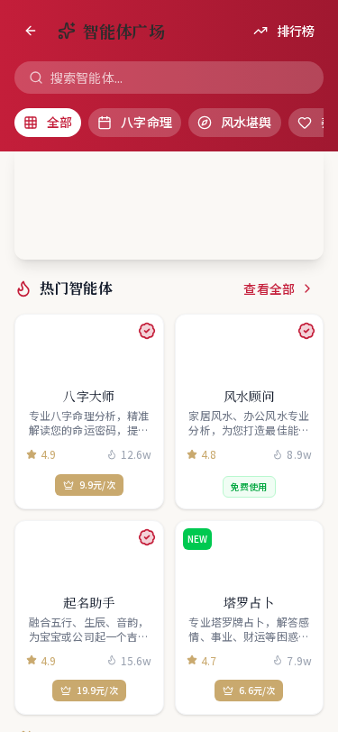 | 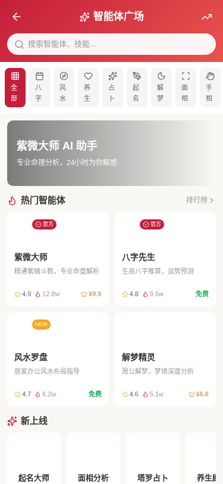 | 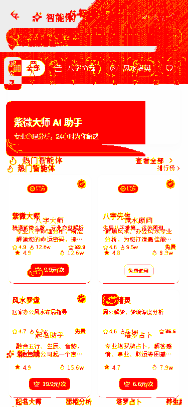 |
|
18.42%
A
/circles/bots
/#/pkg-circle/circles/bots
圈子机器人列表
|
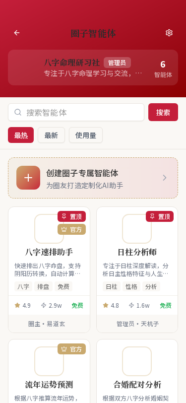 | 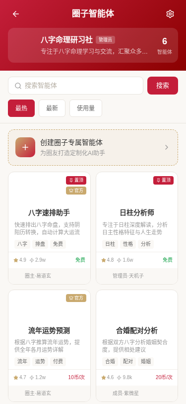 | 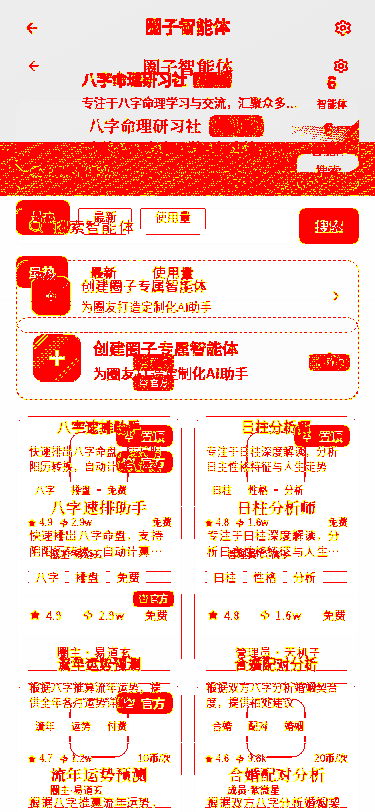 |
|
7.55%
A
/circles/1/bots
/#/pkg-circle/circles/circle-bots
圈子内机器人
|
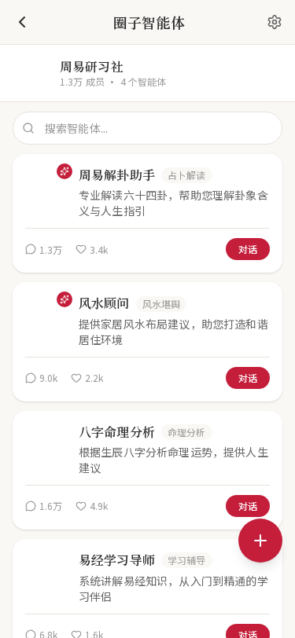 | 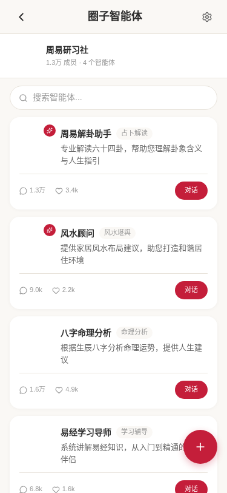 | 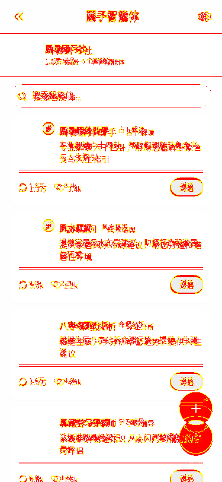 |
|
4.44%
V
/bots/chat/[id]
/#/pkg-agent/bots/chat/index
Bot对话页(A级,v0新迁,pkg-agent分包,接?id= query)。circles/bots和bots广场都跳此路径。红渐变顶栏(返回+头像+名称+在线/官方认证状态+语音通话phone+more菜单[历史/分享/设置/清空对话])+对话scroll-view(欢迎语气泡+推荐问题chip+能力说明tag,消息气泡左bot白/右user红+流式blink光标+图片/文件消息paperclip+时间)+使用限制提示条(今日免费次数+升级会员)+底部输入栏(语音mic/mic-off+输入框+附件image-plus+发送send/loader)。流式回复用setInterval逐字mock(30ms),Markdown简化用rich-text渲染粗体/标题/列表。文件走chooseImage,语音/通话/菜单走toast。补paperclip图标。
|
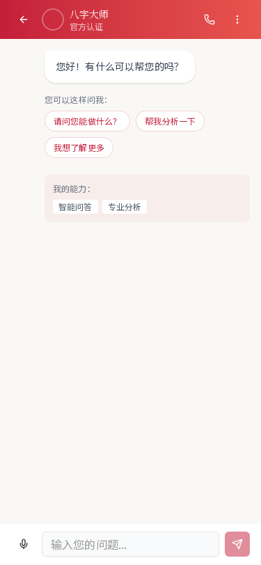 | 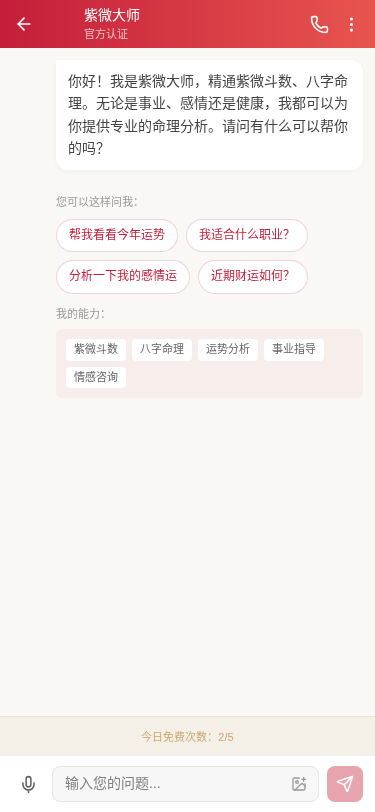 | 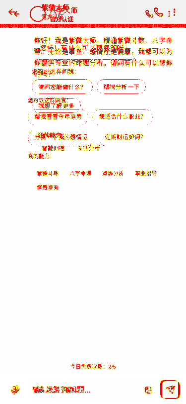 |